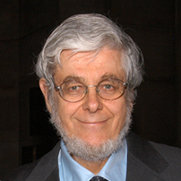

Robert Pollack (Professor of Biological Sciences, Columbia University)
Board Members
Lisa Dolling, Ph. D.
Anthony Lechich, M.D
Pilar Jennings, Ph. D
Marya Pollack, M.D, M.P.H
Robert Remez, Ph. D
Francis A. Champagne, Ph. D
Charles Borrok
Sonia Reese
Melinda Miller, Ph. D
Meredith Bergmann, Ph. D
Christopher L. Brown, Ph. D
Josh Sakolsky
Christina Staudt
Director
Robert Pollack

Robert E. Pollack is professor of biological sciences, member of the faculty of the Earth Institute, lecturer in psychiatry at the Center for Psychoanalytic Training and Research, adjunct professor of science and religion at Union Theological Seminary, Director of University Seminars (2011), and Director of the Center for the Study of Science and Religion at Columbia University. Dr. Pollack graduated from Columbia University with a B.A. in physics, and received a Ph.D. in biology from Brandeis University. He has been a professor of biological sciences at Columbia since 1978, and was dean of Columbia College from 1982-89. He received the Alexander Hamilton Medal from Columbia University, and has held a Guggenheim Fellowship.
Dr. Dolling is the Provost and Vice President for Academic Affairs at Manhattanville College. After graduating with a B.A. in philosophy from Manhattanville in 1984, Dr. Dolling earned two master's degrees in philosophy, one from Fordham and the other from the Graduate Center of the City University of New York where she also received her Ph.D. in philosophy. She taught philosophy at Hunter College, CUNY, St. Peter's College, College of St. Elizabeth, Manhattanville College, Purchase College, SUNY, and St. John's University, where she held several positions including founding director, Women's Studies Program, director, Science and Religion Project, and Executive Director, University Honors Program, before accepting a position at Stevens.
Dr. Lechich is the Medical Director and Sr. V.P. for Medical Affairs at the 729-bed Terence Cardinal Cooke Health Care Center in Manhattan, NY where there are currently residing 50 individuals with advanced Huntington's. As physician, teacher, administrator and writer, Dr. Lechich has focused on defining issues in quality of life for those institutionalized with HD. This message has been carried to the staff of local hospitals, medical students, fellows-in-training, families, and the care teams within the home Center. Empowerment of family, bedside caregivers and improving the formulation of highly individualized comprehensive approaches to care has been his passion for many years.
Dr. Jennings is a writer and psychoanalyst in New York City. With her extensive background in psychoanalytically oriented therapy and Buddhist meditation, she brings a unique and inclusive approach to psychological healing. She is the author of Mixing Minds, released on December 3, 2010 through Wisdom Publications. A warm and engaging speaker, Dr. Jennings is available for workshops and speaking engagements addressing topics related to spirituality and psychotherapy, creative clinical work with children, and healing from trauma.
Dr. Marya Pollack is an Assistant Clinical Professor of Psychiatry at Columbia University Medical Center. She graduated from Columbia College in 1987, after which she attended Columbia University School of Public Health and New York University Medical Center. She co-teaches a course titled Human Nature with Dr. Robert Pollack.
Robert Remez is a professor of psychology at Barnard College. His teaching focuses on the relationships among perception, cognition and language. Since 1985, Professor Remez's research has been supported by the National Institute on Deafness and Other Communication Disorders under the project "Sensory and Perceptual Factors in Spoken Communication." One line of his research examines the perceptual organization of speech and seeks to explain how listeners can follow speech amid the sounds that strike the ear. In a second line of research, he studies the perceptible differences between individual talkers and the phonetic and qualitative aspects of these indexical properties.
Frances Champagne is an Assistant Professor in the Department of Psychology at Columbia University and a Sackler Scientist with the Sackler Institute for Developmental Psychobiology. Dr. Champagne's main research interest concerns how genetic and environmental factors interact to regulate maternal behavior, and how natural variations in this behavior can shape the behavioral development of offspring through epigenetic changes in gene expression in a brain region specific manner.
Charles R. Borrok is one of the highest-ranking brokerage professionals at Cushman & Wakefield. Having joined in 1992 and now serving as Executive Vice Chairman, Mr. Borrok has been involved in the leasing over 70 million square feet throughout the world and has been involved in the purchase and sale of many important properties.
Sonia Reese is the Executive Director of Community Impact at Columbia University. She has had oversight for the management of 27 community service programs at Community Impact since 1991. She steers the organization's growth, ensuring that CI achieves successful outcomes for community members and creates meaningful leadership opportunities for Columbia University and Barnard College volunteers. Sonia has secured CI's financial stability, and most recently she has helped to inaugurate an endowment campaign with the leadership of CU trustees to ensure the longevity of CI and its service programs. Sonia's key areas of focus are program development, community and University outreach, evaluation, fundraising, and special events.
Melinda Miller is the Associate Director of the Center for Science and Society at Columbia University. She graduated from NYU in 2002 and earned a Ph.D. from Rockefeller University in 2010.
Meredith Bergmann is a sculptor who for nearly 40 years has been making work that deals with complex themes in an accessible, beautiful and stimulating way. She works both on public monuments and on a private scale. She seeks out public commissions that explore issues of history, race, human rights, disabilities and the power of poetry and music. Her private works often involve visual and verbal puns. Her largest public commission, unveiled in 2003, was for the Boston Women's Memorial on Commonwealth Avenue in Boston's Back Bay. She is currently sculpting the FDR Hope Memorial for New York City's Roosevelt Island. Meredith lives in New York City with her husband Michael Bergmann, a writer and director, and their son.
Christopher L. Brown, professor, specializes in the history of eighteenth century Britain, the early modern British Empire, and the comparative history of slavery and abolition, with secondary interests in the age of revolutions and the history of the Atlantic world. He is now at work on two projects, one on British experience along the West African coast in the era of the Atlantic slave trade, and a second on the decline and fall of the British Planter class in the era of abolition and emancipation.